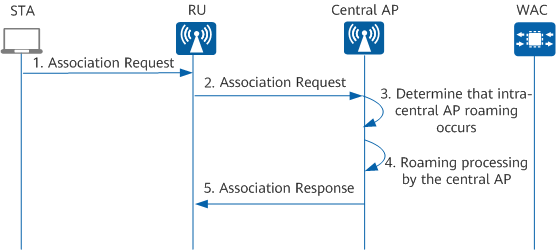
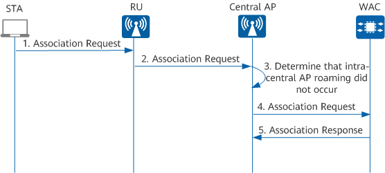

STA Access Process
After CAPWAP tunnels are established and APs go online, the WAC can deliver WLAN service configurations to the APs. Then STAs can connect to the APs to access the WLAN. STA access involves three phases: scanning, link authentication, and association.
A STA can access a WLAN in either IPv4 or IPv6 mode, with the IPv4 mode taking precedence.
- Maximum number of access STAs supported by a WAC and an AP. Three scenarios are involved:
- The number of access STAs on the AP reaches the maximum but that on the WAC does not reach the maximum. In this case, the AP does not allow for access of the new STA. However, the STA can associate with another AP connected to the WAC for WLAN access.
- The number of access STAs on the WAC reaches the maximum. In this case, no new STAs are allowed to access the WLAN even when the number of access STAs on the AP does not reach the maximum.
- Neither the number of access STAs on the AP nor that on the WAC reaches the maximum. In this case, the new STA can associate with the AP for WLAN access.
- VAP-based user access control, that is, the number of STAs that can access one SSID of a single AP.
- User CAC based on the number of STAs, that is, the maximum number of STAs that can access one radio of a single AP.
- User access control based on the STA blacklist and whitelist.
Scanning
The STA scanning stage is similar for Fit AP and agile distributed architectures. They differ only in the objects scanned by STAs: Fit APs in Fit AP architecture and RUs in agile distributed architecture.
A STA can actively or passively scan WLANs.
Active scanning
A STA sends a Probe Request frame containing a specified SSID on each channel to search for an AP with the same SSID. Only the AP with this SSID will respond to the STA after receiving the Probe Request frame. As shown in Figure 1, the STA sends a Probe Request frame to search for the AP with the SSID wlan.
This scanning method is applicable when WLAN information is available and a STA can actively scan the specified WLAN.
A STA periodically sends Probe Request frames carrying no SSID information (that is, null SSID) on channels in the supported channel list to scan WLANs. The APs receiving the Probe Request frame will return Probe Response frames to notify the STA of the wireless services they can provide, as shown in Figure 2.
This scanning method is applicable when a STA actively scans available wireless services and selects one to access.
Passive scanning
An AP periodically broadcasts Beacon frames, each of which carries information such as the SSID and supported rates. Therefore, a STA can listen on Beacon frames transmitted on channels in the supported channel list to obtain information about surrounding APs and then connect to the WLAN. Figure 3 shows this passive scanning process.
Passive scanning is typically used by STAs that require power-saving, such as voice over IP (VoIP) terminals.
Link Authentication
The STA link authentication stage is similar for Fit AP and agile distributed Wi-Fi architectures. They differ only in the objects that authenticate STAs: Fit APs in Fit AP architecture and RUs in agile distributed Wi-Fi architecture.
- Open system authentication: No authentication is required, that is, any STA can be successfully authenticated, as shown in Figure 4.
- Shared key authentication: The same shared key is preconfigured on a STA and an AP. During link authentication, the AP checks whether the STA has the same shared key. If so, the STA is authenticated successfully. If not, STA authentication fails.As shown in Figure 5, the shared key authentication process is described as follows:
- The STA sends an Authentication Request frame to the AP.
- The AP randomly generates a challenge and sends it to the STA.
- The STA uses the preconfigured key to encrypt the challenge and sends the encrypted challenge to the AP.
- The AP uses the preconfigured key to decrypt the encrypted challenge and compares the decrypted challenge with the challenge sent to the STA earlier. If the two challenges are the same, the STA is authenticated successfully. Otherwise, STA authentication fails.
Association
STA association is also known as link service negotiation. After link authentication is complete, a STA initiates link service negotiation using Association packets. Figure 6 shows the STA association process in a Fit AP scenario. Figure 7 and Figure 8 show the association process in a central AP + RU scenario.
In the Fit AP architecture, STA association is implemented as follows:
- The STA sends an Association Request frame to the AP. This frame carries the STA's own information as well as the parameters selected by the STA according to the service configuration, including the supported rates, channels, QoS capabilities, access authentication algorithm, and encryption algorithm.
- The AP receives the Association Request frame, encapsulates it using CAPWAP, and sends the encapsulated frame to the WAC.
- After receiving the Association Request frame, the WAC determines whether to authenticate the STA and returns an Association Response frame.
- The AP decapsulates the received Association Response frame and sends it to the STA.


- The STA sends an Association Request frame to the RU. This frame carries the STA's own information as well as the parameters selected by the STA as determined by the service configuration, including the supported rates, channels, QoS capabilities, access authentication algorithm, and encryption algorithm.
- After receiving the Association Request frame, the RU encapsulates it using CAPWAP and sends the encapsulated frame to the central AP.
- The central AP checks whether it has the local STA entry.
- If the central AP has the local STA entry, it determines that roaming occurs within the central AP. Then the central AP performs roaming processing and replies with an Association Response frame to the RU.
- If the central AP does not have the local STA entry, it determines that intra-central AP roaming did not occur. The central AP then forwards the received Association Request frame to the WAC. After receiving the frame, the WAC determines whether access authentication is required for the STA and returns an Association Response frame to the central AP.

After receiving the Association Response frame, the STA checks whether access authentication is required. If not required, the STA can directly access the WLAN. If required, the STA initiates an access authentication request. After successful access authentication, the STA can access the WLAN. For details about STA access authentication, see "NAC Configuration" in CLI Configuration Guide > User Access and Authentication Configuration.
STA Access Configuration Procedure
Figure 9 shows the procedure for configuring STA access. The radio configuration and VAP configuration are not subject to any sequence requirement. Before configuring STA access, configure AP onboarding.